飞行器外流场展示案例
在高升力装置的仿真计算中，精确捕捉其复杂流场特性至关重要，而这正是边界层网格生成与自适应网格加密技术的核心价值所在。 由于流体在装置壁面附近会形成薄而关键的边界层，其中速度和物理量变化剧烈，传统的均匀网格难以有效解析。 因此，我们必须应用精细的半结构化边界层网格来捕捉黏性效应、流动分离和激波等关键现象，特别是在高雷诺数或高马赫数条件下，这种对高长宽比网格单元的需求尤为迫切， 因为它们能高效地解析各向异性流动。通过结合边界层网格的自动生成与基于CFD结果的自适应网格加密，我们能够将计算资源精确聚焦于流场中的高梯度区域， 显著提升计算精度的同时，大幅优化网格数量，从而提高计算效率。这种“后验”误差控制方法，不仅增强了仿真结果的可靠性， 也简化了复杂几何和流态下的网格处理流程。
接下来，我们将通过一系列经典且具有代表性的案例，包括Onera M6翼型（验证跨音速激波与边界层相互作用）、 CRM翼身组合体（展现复杂翼身干扰及高雷诺数巡航模拟）、65°DeltaWing（捕捉强涡流结构及其与边界层的耦合）以及DLR F11高升力构型（模拟多段翼型分离与附着现象）， 全面展示边界层网格生成与自适应网格计算工具在应对不同气动挑战时的强大通用性、精确性和高效性。
Onera M6
案例介绍：
Onera M6 翼型由法国国家航空航天研究中心（ONERA）在20世纪70年代设计，其核心目标是为三维、高雷诺数跨音速流动的计算流体动力学（CFD）代码提供一个标准化的验证和评估平台。 尽管Onera M6翼型几何结构相对简单，为一个后掠的半展弦比机翼，没有扭转，翼型截面采用ONERA D型对称翼型，但其在跨音速条件下能产生局部超音速流动、 激波形成以及激波与边界层相互作用（激波诱导分离）等复杂现象，对数值模拟的精度提出了极高要求。这些特性使其成为评估不同数值方法捕捉跨音速流动特征能力（如压力分布和激波位置） 的典型案例。Onera M6翼型拥有详尽的风洞实验数据，包含了在不同马赫数和攻角下的表面压力系数分布以及升力、 阻力系数等气动性能参数， 通常在高雷诺数下进行以模拟实际飞行条件。
Onera M6翼型的仿真计算难点包括精确捕捉激波的位置、强度和结构，这需要高分辨率网格和合适的数值格式； 处理高度非线性和复杂的激波-边界层相互作用黏性效应，这依赖于精细的近壁网格和准确的湍流模型； 以及为了精确捕捉这些复杂现象所需的精细网格和先进数值方法所带来的巨大计算成本，这些都使得Onera M6成为验证网格自适应和高效算法的理想案例。
数据源：Schmitt, V. and F. Charpin, "Pressure Distributions on the ONERA-M6-Wing at Transonic Mach Numbers," Experimental Data Base for Computer Program Assessment. Report of the Fluid Dynamics Panel Working Group 04, AGARD AR 138, May 1979.
网格生成配置： 第一步计算使用的M6_ADAPT.json如下。我们首先使用压力场捕捉翼型表面激波，接下来使用马赫数场对剩余体网格进行自适应调整。
{
"Function": {
"Volume_genration_from_cad":false,// 是否从CAD生成体积网格
"Layer_gneration":false,// 是否生成边界层网格，第二阶段改为true
"Open_layer":true,// 使用开方法生成边界层网格
"Mesh_adaptation":true,// 是否使用网格自适应
"Mesh_adaptation_with_layer":false,// 是否对边界层网格进行自适应
"Mesh_optimize_sdf":false
},
"Inputfile":{
"Geofile":"",//输入CAD文件名
"Meshfile":"mesh_M6-org.su2",//输入网格文件名
"SU2script":"M6-EULER.cfg"//仿真计算配置文件名，第二阶段使用"M6-RANS.cfg"
},
"Inputparameter":{
"Target_surface_tag_org":[1],// 需要生成边界层的表面标签
"Scale":1,// 网格缩放比例
"Domain_type":"box",// 网格生成域类型
"Domain_length":11,// 网格生成域特征长度
},
"Meshing":{
"Ywall":1e-6,// 边界层网格尺寸
"Use_expension":true,// 使用边界膨胀方法
"Use_least_square":true,// 使用最小二乘法
"Min_meshsize":0.001,// 最小网格尺寸
"Max_meshsize":2,// 最大网格尺寸
},
"Mesh_Adaptation":{
"Use_physical_parameter":"Pressure",// 自适应物理场，第二阶段改为"Mach"
"Isotropic":true,// 是否使用各向同性自适应
"Smooth_iteration":20,// 平滑迭代次数
"Iteration":10,// 自适应迭代次数
"Use_restart":false,// 使用热启动计算
"Initial_cal_iteration":2000,// 初始计算迭代次数
"Rest_cal_iteration":2000,// 热启动计算迭代次数
"Initial_cal_cfl":20,// 初始计算CFL数
"Rest_cal_cfl":20,// 热启动计算CFL数
},
"Outputfile":{
"SU2mesh":"M6-layer.su2"// 输出边界层网格文件名
}
}
| 参数 | 值 | 单位 |
|---|---|---|
| AOA | 3.06 | ° |
| 远场马赫数 | 0.84 | |
| 远场雷诺数 | 14.6E6 | |
| 远场温度 | 300 | K |
| CFL | 20 | |
| SU2求解器 | RANS+SA | |
| 数值格式 | JST+SCALAR_UPWIND |
结果图：
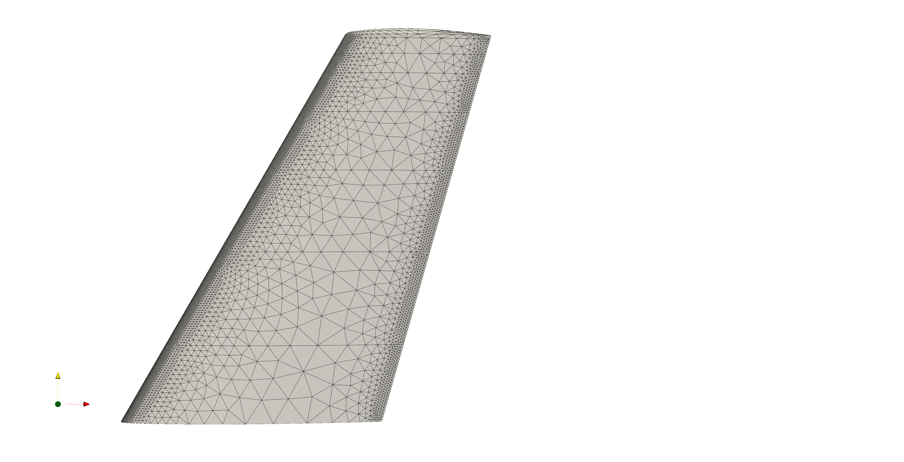
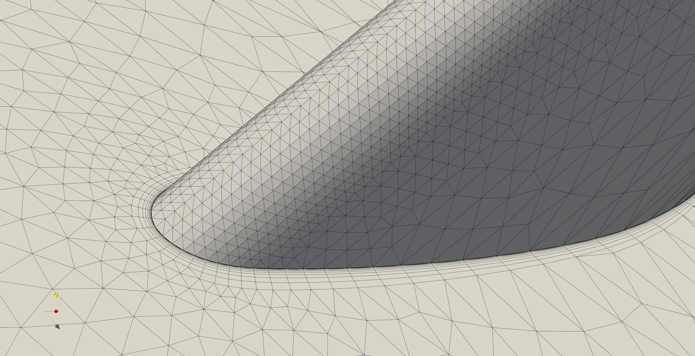
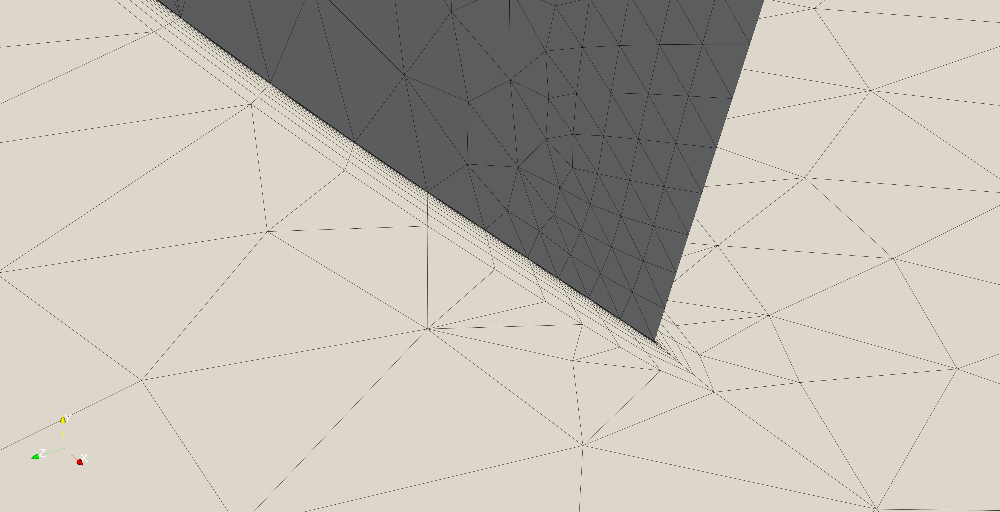
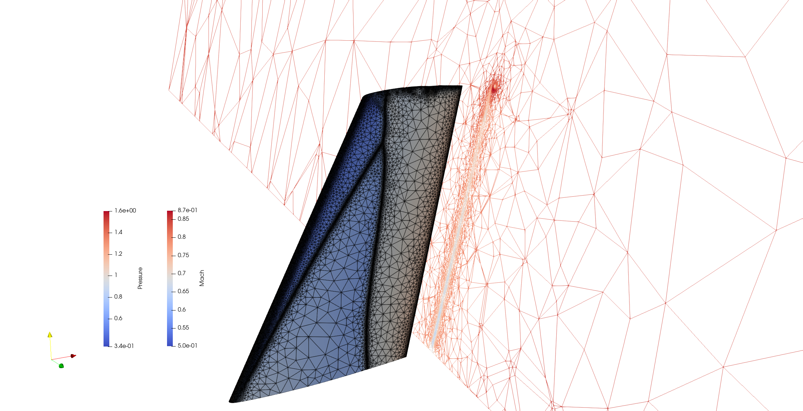
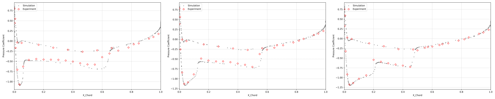
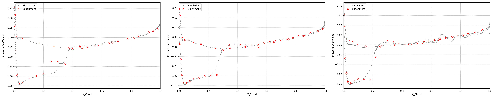
CRM
案例介绍：
CRM，全称 Common Research Model (通用研究模型)，是由美国国家航空航天局（NASA）主导设计的一个现代跨音速宽体客机模型，其设计目标是为航空工业和学术界提供一个开放、 标准化的计算流体动力学（CFD）验证和研究平台。CRM旨在解决由于缺乏统一的基准模型而导致的CFD结果差异问题，从而促进CFD代码的准确性、可靠性和效率的提升。
CRM的特点在于其几何构型代表了现代超临界跨音速机翼和典型宽体客机机身，这使得它能够模拟真实的飞行条件，并产生复杂的流动现象，如激波、激波-边界层相互作用以及尾迹流动。 其几何信息是公开的，并且有多个版本，例如用于高速巡航条件（M=0.85）的CRM和用于高升力低速条件（High Lift CRM）的版本，这为不同飞行阶段的CFD研究提供了便利。 在实验信息方面，CRM模型在NASA的多个风洞中进行了详尽的测试，例如NASA兰利研究中心的国家跨音速风洞（National Transonic Facility, NTF）和14x22英尺亚音速风洞。 这些实验产生了大量的表面压力分布、气动力/力矩数据以及其他流场测量数据，这些数据成为了CFD模拟结果验证的黄金标准。 这些实验数据及其不确定性量化在各种公开研讨会（如 AIAA 航空设计优化讨论组，ADODG）和文献中广泛发布，极大地推动了CFD方法的发展。
相比于简单的翼型，CRM包含机翼、机身、平尾、发动机短舱和支架（某些版本可能不包含垂直尾翼或发动机），这使得网格生成变得更加复杂和耗时，尤其是在部件连接处和高曲率区域需要精细化网格。 其次是复杂流动机理的捕捉，CRM在跨音速巡航条件下会产生强烈的激波和激波-边界层相互作用，在高升力条件下则会涉及大规模的气流分离、缝隙流动和多体干扰， 这些都需要高精度的数值格式、合适的湍流模型以及足够的网格分辨率才能准确模拟。湍流模型的选择和验证对于CRM的模拟至关重要， 不同的RANS模型在预测激波、分离和尾迹方面可能表现出显著差异。
数据源：https://commonresearchmodel.larc.nasa.gov/
网格信息及计算配置（case3）：
| 参数 | 值 | 单位 |
|---|---|---|
| AOA | 11.0 | ° |
| 远场马赫数 | 0.2 | |
| 远场雷诺数 | 11.72E6 | |
| 远场温度 | 289.44 | K |
| CFL | 20 | |
| SU2求解器 | RANS+SA | |
| 数值格式 | JST+SCALAR_UPWIND |
结果图：
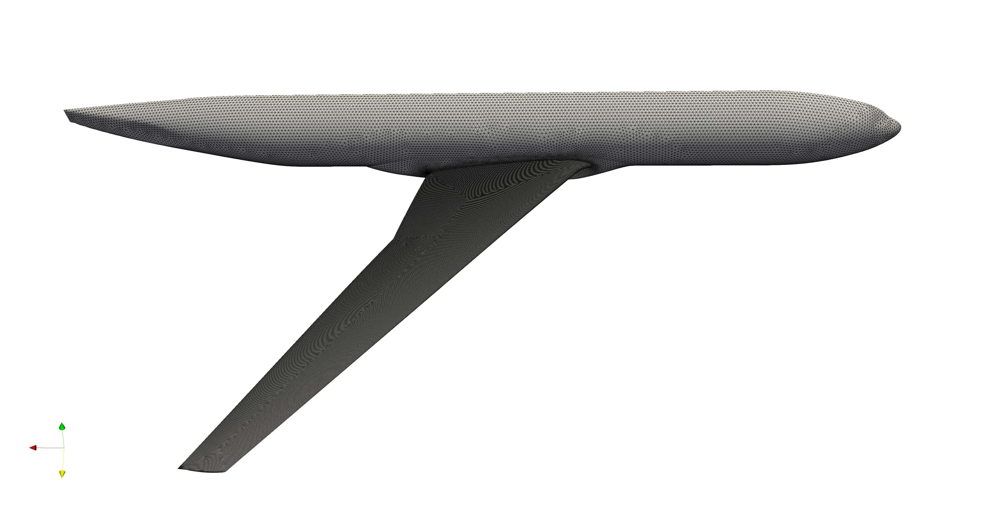
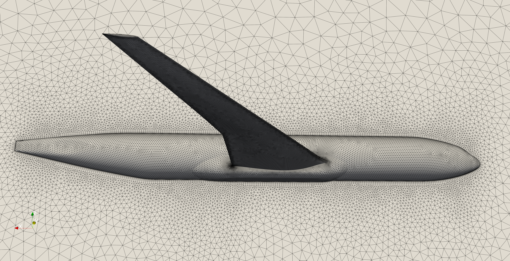
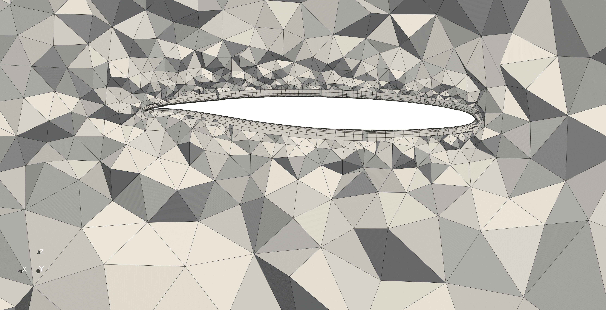
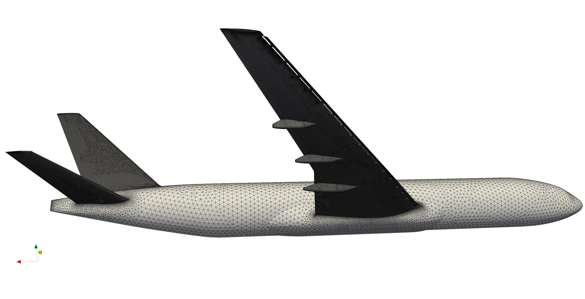
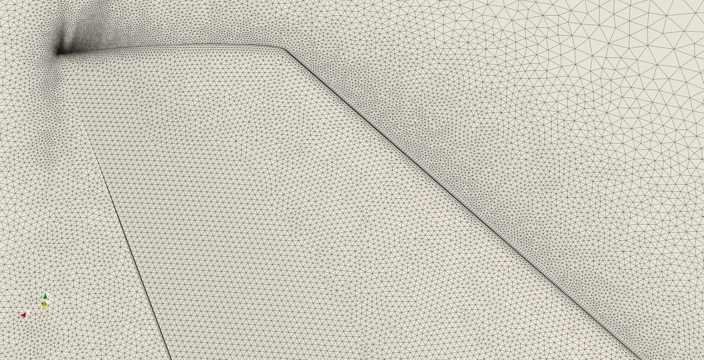
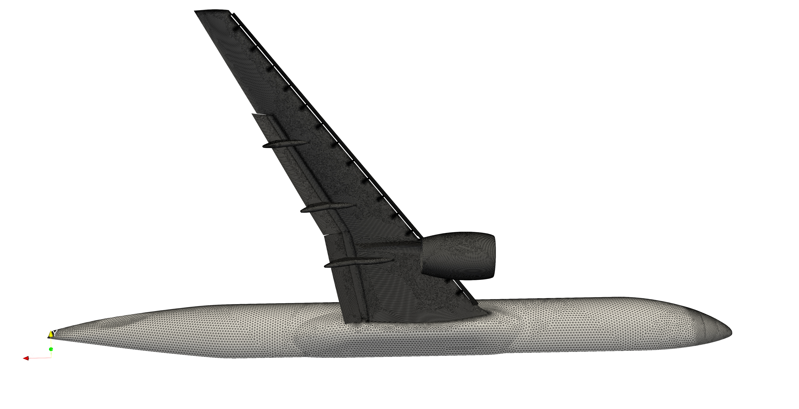
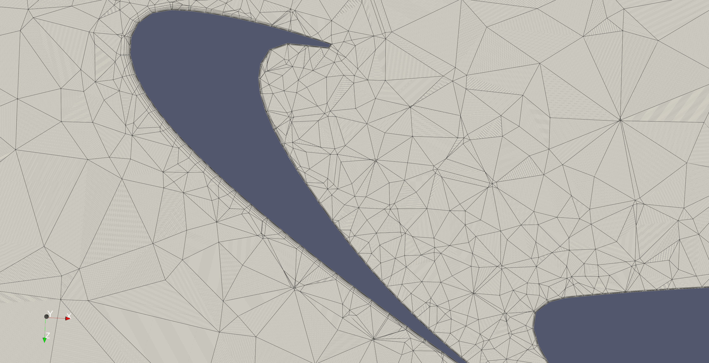
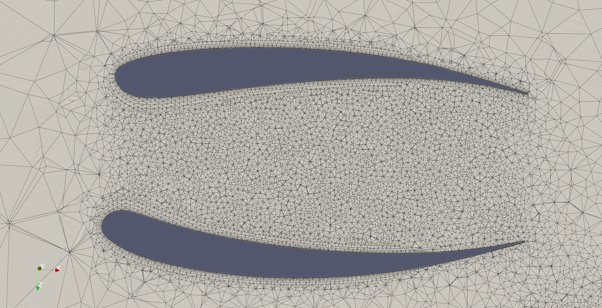
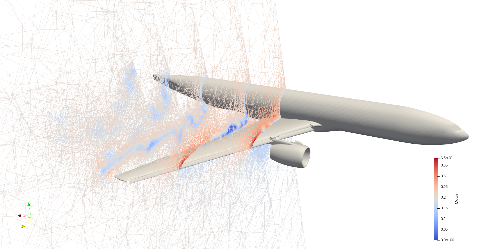
DLR F11
案例介绍：
DLR F11 模型由德国宇航中心（DLR）设计，是一个典型的双涵道支线客机配置模型，旨在为民用航空器的气动弹性设计、 气动噪声分析以及更复杂的非定常气动特性提供开放且具备详细实验数据的验证和研究平台，尤其关注跨音速巡航条件下气动弹性耦合现象。 该模型采用带有双涵道发动机短舱和支架的机翼-机身-平尾构型，模拟了实际支线客机的几何特征，并首次将气动弹性效应纳入设计考量， 可进行变形测量并与气动力耦合。DLR F11 已在德国宇航中心的欧洲跨音速风洞（ETW）等先进风洞中进行了广泛测试，这些实验在接近真实飞行雷诺数的高压和低温条件下进行， 提供了包括表面压力分布、气动力/力矩、模型变形以及壁面干扰效应等详细数据，这些高精度数据对于验证CFD在预测复杂流场、气动载荷以及气动弹性耦合方面的能力至关重要。
与主要由美国国家航空航天局（NASA）设计、更侧重于现代宽体客机高速巡航条件下气动效率和流动机理的CRM（Common Research Model）模型相比， DLR F11 更侧重于欧洲航空工业的需求，代表了支线客机构型，并且在设计和研究方向上更强调气动弹性耦合特性、气动噪声以及与发动机短舱的相互作用。
数据源：R. Rudnik, K. Huber and S.Melber-Wilkending, EUROLIFT Test Case Description for the 2nd High Lift Prediction Workshop, 30th AIAA Applied Aerodynamics Conference 25 - 28 June 2012, New Orleans, Louisiana
结果图：
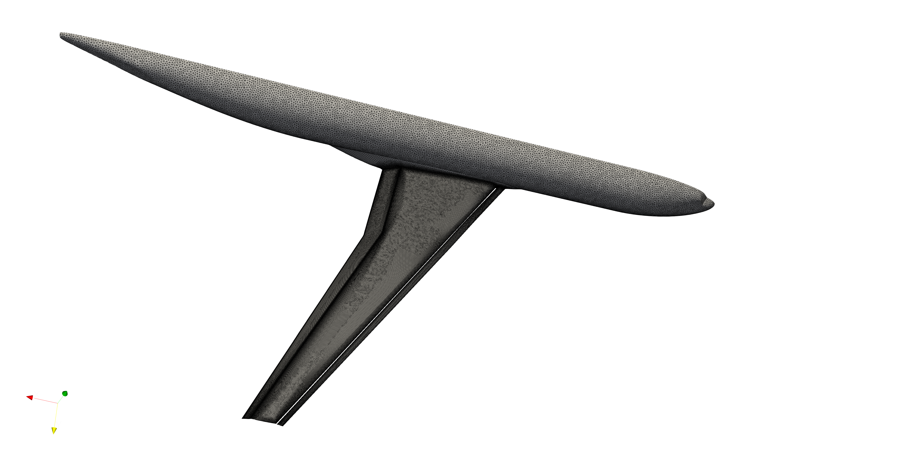
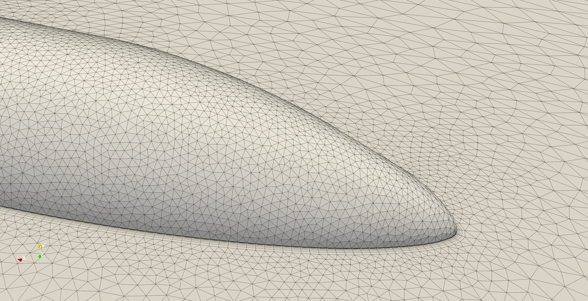
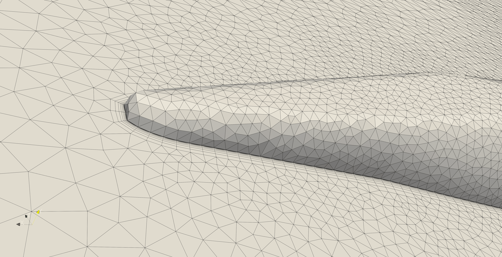
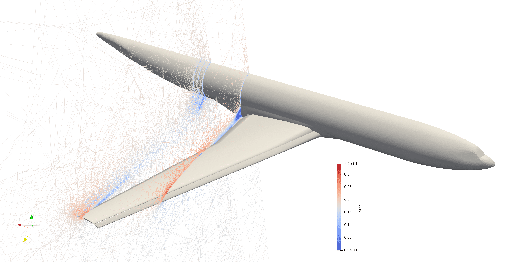
65°DeltaWing
案例介绍：
65° Delta Wing（65度三角翼）是航空领域长期研究低展弦比三角翼构型在高攻角气动现象、涡流特性及非线性气动力方面的通用基准模型， 其理念和应用可追溯至20世纪初，尤其是德国航空先驱亚历山大·利皮施的开创性研究，为后来的三角翼设计奠定了基础。 作为通用模型，其设计目标在于深入理解复杂涡流空气动力学，特别是在高攻角下前缘涡（LEV）提供额外升力的机制，并为验证计算流体力学（CFD）方法的准确性提供可靠数据， 同时服务于高超声速飞行器和战斗机设计优化。该模型以其65°大后掠角能有效生成稳定前缘涡、产生复杂流场特性、以及相对简单的几何结构为主要特点， 使其成为研究非线性气动力和涡流破裂的理想对象。
全球各大研究机构，如NASA兰利研究中心，都在宽广的雷诺数和马赫数范围内对其进行了大量实验， 提供了丰富的表面压力、气动力/力矩及流场可视化数据，特别是在NASA兰利国家跨音速风洞（NTF）进行的接近真实飞行的雷诺数测试，为CFD模型验证提供了重要基准。
尽管几何结构简单，但65° Delta Wing的仿真计算仍面临显著挑战，包括准确捕捉高度非线性、三维的复杂涡流（特别是涡核破裂现象）、 湍流模型的选择限制、精细网格生成以适应涡流运动和前缘几何、以及高攻角下强非线性导致的数值收敛性和稳定性问题。
数据源：Julio Chu and James M. Luckring, Experimental Surface Pressure Data Obtained on 65 ° Delta Wing Across Reynolds Number and Mach Number Ranges, Volume 1 - Sharp Leading Edge, NASA Technical Memorandum 4645, February 1996
网格信息及计算配置：
| 参数 | 值 | 单位 |
|---|---|---|
| AOA | 26.7 | ° |
| 远场马赫数 | 0.851 | |
| 远场雷诺数 | 6E6 | |
| 远场温度 | 322.59 | K |
| CFL | 20 | |
| SU2求解器 | RANS+SA | |
| 数值格式 | JST+SCALAR_UPWIND |
结果图：
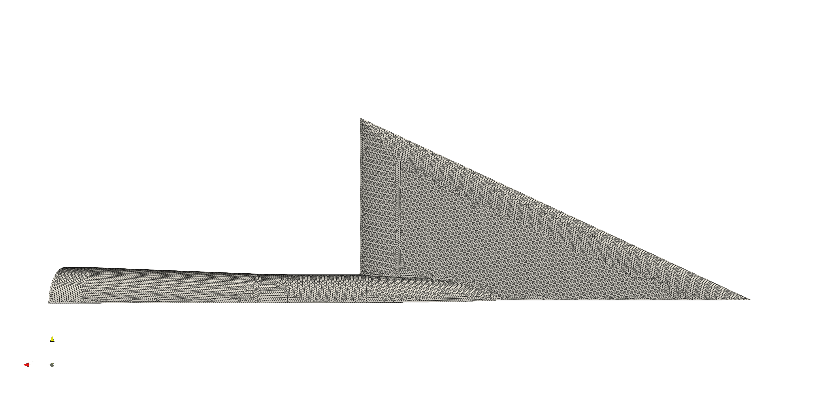
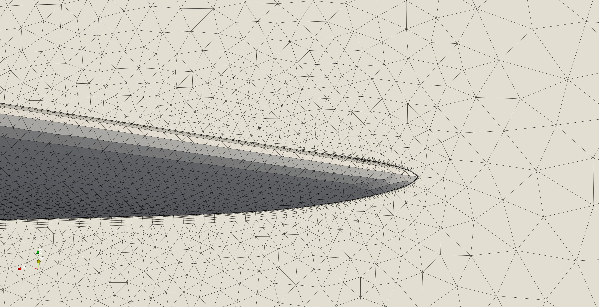
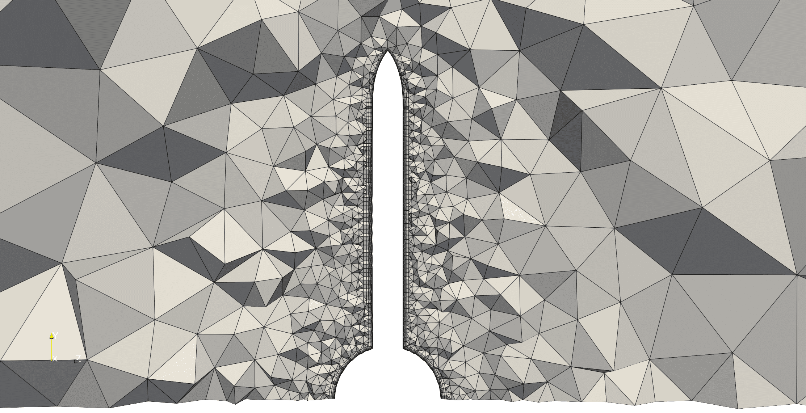
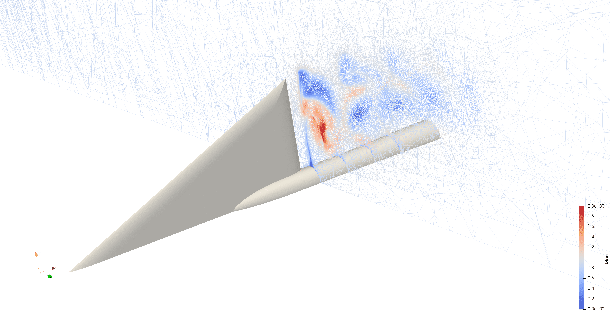